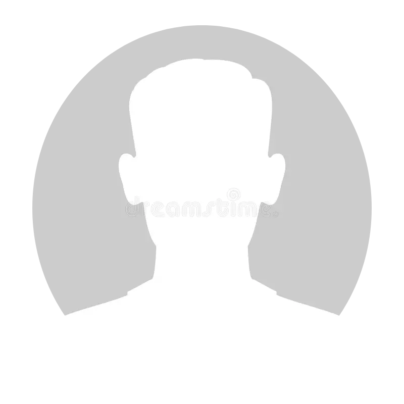

Aparelhos tecnológicos em geral, estão presentes na nossa atualidade. Além dos seu grandes benefícios as pessoas acabam esquecendo de como realizar o seu descarte. Por isso nossa startup tem o objetivo de consciêntizar a recliclagem do Lixo eletrônico e redireciona-lo para um lugar apropriado.
A Tecco inicialmente, foi fundada por um grupo de estudantes de uma escola técnica da baixada santista, cada um desempenhou um papel fundamental em seu desenvolvimento
oi
Andrés
Nossa empresa, prioriza a reutilização dos descartes eletrônicos, por serem os que mais afetam o meio ambiente.
A nossa startup tem o objetivo, de reduzir em mais de 50% do lixo eletrônico das escolas tecnológicas e empresas do Estado de São Paulo, se formos bem sucedidos ampliaremos nossas metas para outros estado do Brasil.